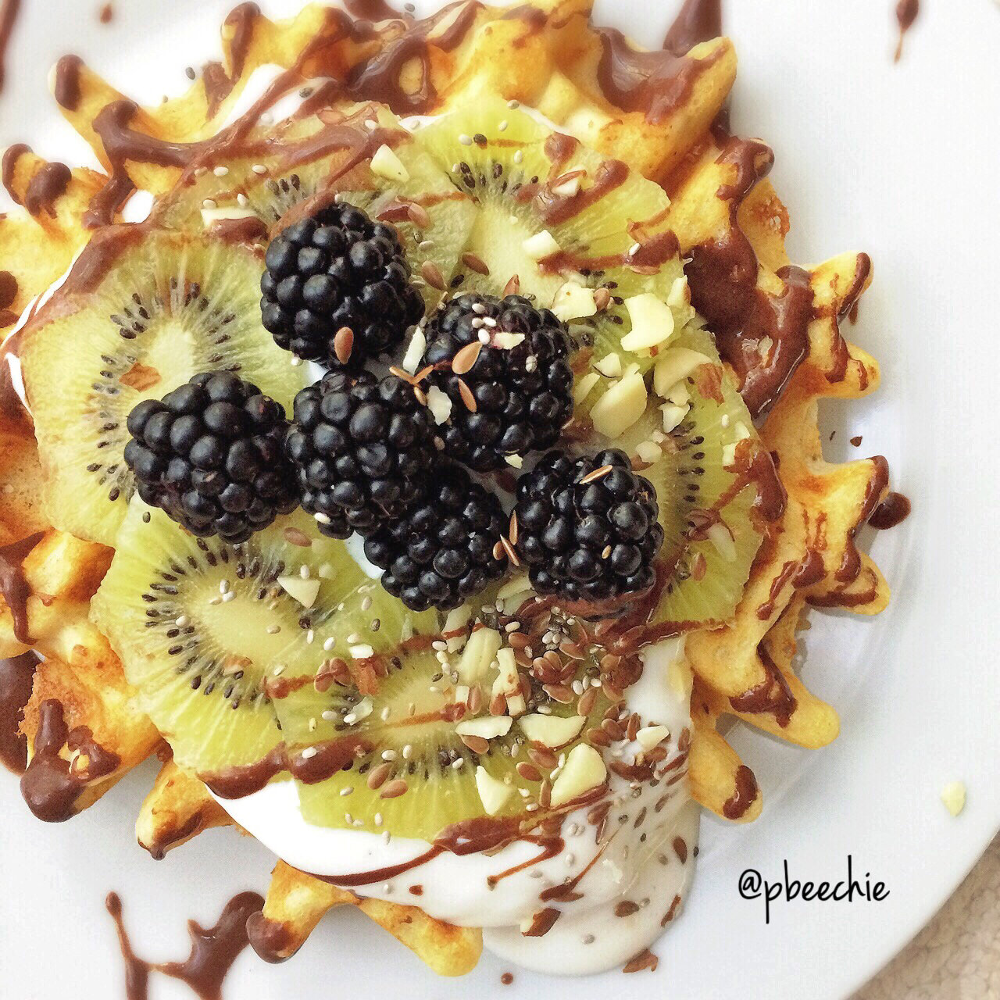

White Chocolate Protein Waffles + Fruit

Waffles, man :). I swear there's a waffle under all the toppings XD. Like I always say...my motto is, the more toppings on your food the better your quality of life. Okay that's not my motto. But it's pretty dang true. Am I right or am I right. Yeah, you're right Kim. Thanks Kim.
I had this post workout and it was just. so. perfect. A lovely healthy treat after working hard in the gym!! Used two things I'm loving right now - protein waffle mix and quark. Quark is cool. It's higher protein content than greek yogurt, this kind is sweetened with stevia, and it's absolutely delicious.
SOOO onto the actual meal. White chocolate protein waffles topped with vanilla quark, kiwi, blackberries, a chocolate protein drizzle, and crunchies :D (sliced almonds, flax seeds, & chia seeds). That is all.
White Chocolate Protein Waffles
Serves: 1
-
1/3 cup white chocolate protein pancakes mix
-
1/3 cup water
-
1 container vanilla quark
-
1 peeled kiwi
-
1/3 cup of blackberries
-
1 TBSP chocolatewhey protein + water
-
any preferred toppings!
Mix the protein pancake mix and water. Let it sit for 2-3 minutes while the waffle maker heats up. Spray the waffle maker with nonstick spray and let it cook. Remove and let cool.
Top with the quark, sliced kiwi, blackberries, the whey protein mixed with water, and any other toppings you prefer! It's a heavenly mix of crispy, creamy, fruity yum. :)
Nutritional info for everything: 346 calories; 5 g fat, 46 g carbs (7 g fiber, 17 g sugar), and 35 g protein.